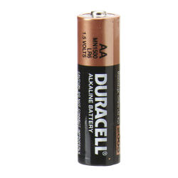

Electronic communications board F13
Contents |
Abstract
Create a communication board for an 8 year old boy with a brain injury.
Team members
- Ali Alshamrani
- Nicole Claiborne
- Alex Dvorak
- Tyler Mcdonald
- Lewis Pumpelly
- Josh Randles
- Samantha White
Acknowledge help of others
- Chris Mills
Problem Statement/overview of the need
Just after his seventh birthday, a boy was hit by a car while playing in his yard. He suffered a debilitating brain injury that rendered him unable to communicate with his parents. Our goal is to make him a board that will give him some communication back. We have met with him and his family, and they are providing a list of most needed phrases and commands. The board needs to have a simple, easy to use interface as well as appealing themes to encourage him to use the board. This board will alleviate the stress and confusion of not being able to communicate his basic needs.
Design Specifications
- Dimensions must be less than 2.5 ft X 1.5 ft
- Less than 10 lbs
- Operate for at least 4 hours without having to be recharged or batteries changed
- Between 4 to 9 commands visible at a time
- At least 20 commands in total
- Cordless
- Commands must be interchangeable
- Must have auditory capabilities
Conceptual Design
Design Concept 1
- Mount a tablet in a Plexiglas casing to protect it and prevent the touch screen from accidentally being used
- Use Android software with JABtalk or similar app to program in commands
- Hook up a roller ball mouse with a right click or number pad to interface with the tablet
- Unit will be rechargeable using tablet's internal battery
Design Concept 2
- Toy Merlin has nine light up buttons that each correspond with a command
- Hooked up to a tablet or LCD screen mounted in a Plexiglas or lexan box for protection
- Use free software downloads from Wikipedia to program
Design Concept 3
- Raspberry Pi computer with Linux software
- LCD screen mounted in a 3-D printed casing under a Lexan front surrounded by weather stripping
- 20-mm fan moving heat out to the left side
- Number pad re-routed to larger buttons on each side of the board
- Roller mouse ball with large right and left click at the bottom of the board that can be switched on and off
- 6-cell battery that can be recharged
- Grip mat on bottom of case with Velcro strips to attach communication board to a chair tray
Design Concept 4
- Buy a Gotalk Communicator 4+ and program in the commands
- Displays 6 commands at a time
- Holds a maximum of 22 commands at a time
- 4.5 minutes of audio recordings
- Simple to use interface
- Simple to change commands
- Durable
- Has button lock so the child can not accidentally change the commands
- Runs off two AA batteries
Evaluate concepts/select candidate
After careful analysis of our conceptual designs, we have decided the best option was to purchase a product that has already been tested, proven, and manufactured. The Gotalk Communicator 4+ fits all the necessary design criteria and does not require complex programming on our part. It is also more affordable than creating something from scratch and does not risk student programming errors. If something does go wrong in the future, troubleshooting would be much easier with support from the manufacturer. We plan to purchase a Gotalk Communicator 4+ and program in the commands that the family asks for. We will also test it for any potential snafus and address them if they arise. From there, we will teach the family to change the commands on their own, so this product can grow as the child grows.
In addition to the Gotalk Communicator 4+, we will also pursue a second project for the boy that has the potential to help him in the future as he gains more muscle control. We will take a tablet and personalize it for his needs. We will use the JabTalk app for communication purposes, but the tablet has the additional benefit of being able to download simple, single touch games. These games will help stimulate him mentally and encourage him to want to use the board. If possible, we will meet with the family to see how he responds to the touch screen display. This type of board may not be as beneficial to him right now, but it will be more versatile in the future if and when he gains more dexterity.
Detailed Design
Purchase a Gotalk Communicator 4+ and create a few sheets with sound commands
Description of selected design
1. Interchangeable commands
2. Small and portable
3. Four large message keys and two core message keys
Detailed description of selected design
1. Interchangeable commands: The Gotalk Communicator 4+ comes with five blank overlays that are stored internally within the board. These overlays can have pictures added and removed at the user's discretion. The board will also record and play back audio according to which button of which overlay is selected. The board can record up to 4.5 minutes of audio, and audio can also be changed at the user's discretion. Audio volume can be adjusted with volume control buttons.
2. Small and portable: The dimensions of the board are 9in X 12in X 1.125in. This will be big enough for him to see and use but small enough to sit on his desk or carry to doctor's appointments. It also only weighs 23 oz for easy portability. The board has a built in handle to allow it to be carried around. It is also designed for durability, and the manufacturer offers a two year warranty on it. The unit runs off of 2 AA batteries.
3. Four large message keys and two core message keys: The four main message keys are 3" square, and their picture and audio change with each overlay. The two core message keys are smaller, but their commands remain the same with each overlay. The four main button layout is simplistic and straightforward. The large buttons are easy to see and press. The two core message keys are ideal for commands such as "yes" and "no" that the family will always want on the board. The buttons also have guards between each one to help the user select the correct button, and five sensitivity levels for button selection.
CAD Drawings
2. 
Final Assembly looks like part 1. The battery will be inserted inside of it. We will create sheets with different graphics for the buttons, and these sheets will be interchangeable.
Bill of Materials
- Bill of Materials
| Item | Individual Price | Quantity | Item Total | |||
|---|---|---|---|---|---|---|
| Gotalk Communicator 4+ | $155 | 1 | $155 | |||
| Rechargeable AA batteries | $30 | 1 | $30 | |||
| Gotalk Overlay Software | $79 | 1 | $79 | |||
| 7" Tablet with Android OS | $60 | 1 | $60 | |||
| Grand Total: | $324 |
Assembly Instructions
1. Insert Gotalk Overlay Software CD into computer and follow the on screen directions to download the software
2. Open the Gotalk Overlay program and click create sheet for the 4+ device
3. Right click each square to add pictures
- You can either load pictures that are on your computer or add clipart that is included with the overlay creating software
4. Save and print each newly created sheet
5. Cut out each command sheet along the solid outside line
6. Insert charged batteries into the back of the Gotalk Communicator 4+
7. Insert printed command sheets into the protective plastic provided with the Gotalk Communicator 4+
8. Record the messages that correspond to each picture
- Before recording, navigate to the desired page level. - When ready to record, push the circular button on the back of the communication board. - A red light will turn on at the top of the front of the device, but the device is not yet recording. - Push the specific button which corresponds to the message. - When the red light starts flashing, the device is recording. - Record the message. - Press any button to stop recording. - To finalize the recording, press the circular button on the back again.
9. Repeat for each command sheet set
10. The communicator is now ready for use!
Completed design
We supplied the family with three starter sheets for their GoTalk. They asked for a board with body parts so he could tell them what was hurting when he wasn't feeling well. In addition we created a board with animal sounds and vehicle sounds that will help him learn how to use the board.
Instructions for safe use
- Do not use the device unless supervised by an adult that has been fully understood the safe use of this product.
- Avoid water and moisture when using this product.
- Do not allow children to play with electrical sockets when charging product.
- Device is not edible, do not attempt to eat whole or any part of device
Summary and Conclusions
On a project that is so dependent on programming and electronics, we decided to go with a product that was already available on the market. The GoTalk communicator 4+ meets all the child's needs. He will be able to use it to communicate with his family. In addition, he has extra sheets that will be fun and interactive for him. We will teach the family how to make additional sheets and change the commands, so the board will be versatile and able to grow as he grows. Unfortunately, we were not able to meet with the family to see how he would interface with a touchscreen display. We have a small tablet personalized for him that we will deliver to him with the GoTalk. We can teach the family how to use it, and hopefully he will be able to use it in the future.